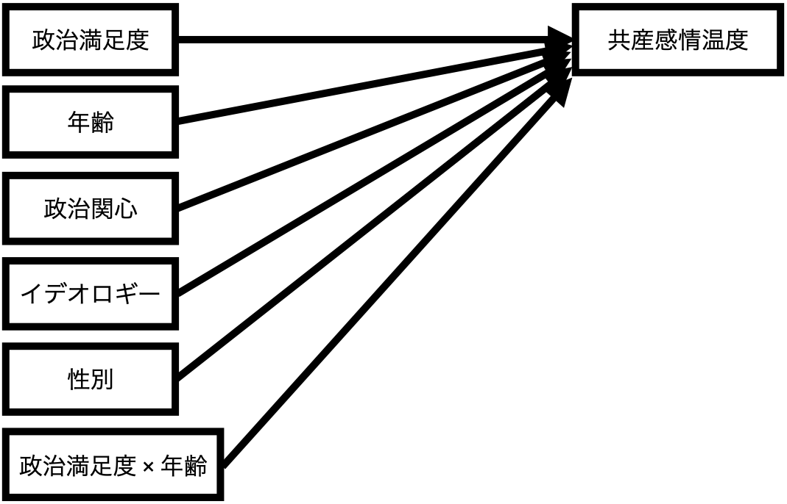
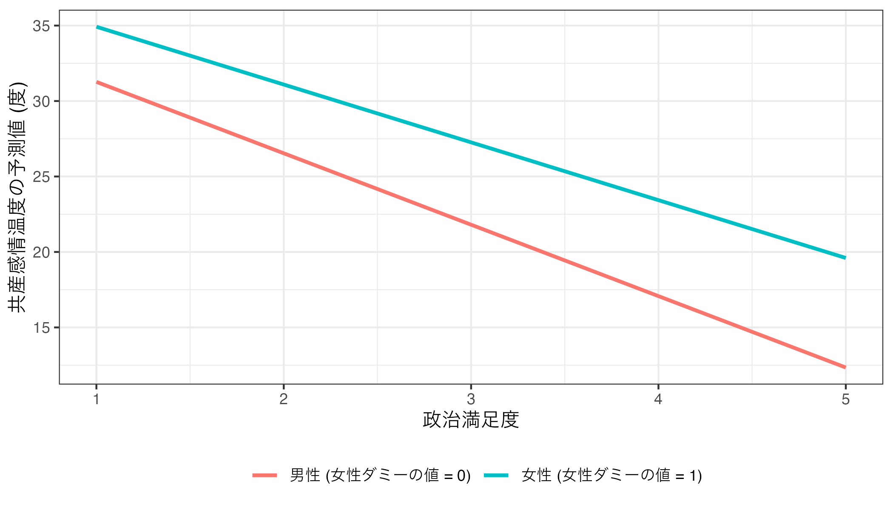
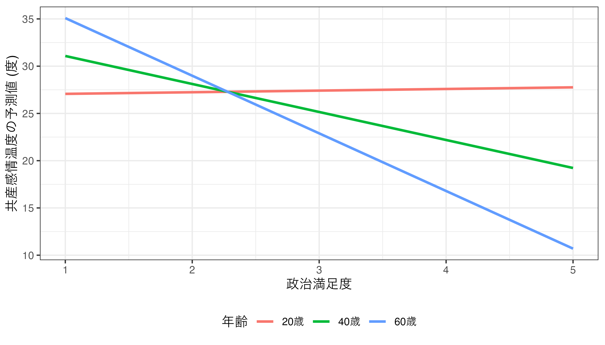

第12回講義資料
交互作用
スライド
セットアップ
本日の実習用データ（LMSからダウンロード可能）と必要なパッケージ（{tidyverse}、{summarytools}、{marginaleffects}）を読み込む。ただし、{marginaleffects}がインストールされていない場合は、コンソール上にinstall.packages("marginaleffects")を入力し、インストールしておくこと。
交互作用とは
以下の図のように主な説明変数（\(X\)）と応答変数（\(Y\)）の関係において、\(X\)が\(Y\)に与える影響がその他の変数（\(Z\)）の影響を受ける場合を考えてみよう。
これは\(X\)が\(Y\)に与える影響は一定ではないことを意味する（= \(X\)が\(Y\)に与える影響は\(Z\)に依存する）。ここで、\(Z\)は調整変数 (moderation variable; moderator)と呼ばれる。調整変数はダミー変数でも、連続変数でも可能だ。
この交互作用を実際の回帰式として表すと以下のようになる。

\[ \hat{Y} = \alpha + \beta_1 X + \beta_2 Z + \beta_3 X \cdot Z \tag{1}\]
ここで説明変数に調整変数をかけた変数（\(X \cdot Z\)）は交差項 (interaction term)と呼ばれる。これまでの（重）回帰分析では変数\(X\)が\(Y\)に与える効果は\(\beta_1\)であると解説したが、回帰式に交差項が含まれている場合は解釈に注意が必要だ。なぜなら回帰式において\(X\)は\(\beta_3\)にも登場するからである。これは 式 1 を変形してみると分かりやすい。
\[ \hat{Y} = \alpha + (\beta_1 + \beta_3 Z) X + \beta_2 Z \tag{2}\]
式 2 によると、変数\(X\)が\(Y\)に与える効果、つまり\(X\)の傾き係数は\(\beta_1\)でなく、\(\beta_1 + \beta_3 Z\)だということが分かる。交互作用を仮定したモデルに解釈はやや面倒ではないが、難しい数式が登場するわけではない。ここでは調整変数がダミー変数の場合と連続変数の場合の例を紹介する。
まず、調整変数\(Z\)が0、または1の値のみをとるダミー変数の場合（\(Z \in \{0, 1\}\)）だ。回帰分析の結果、以下のような1次関数が得られたとしよう。
\[ \begin{align} \hat{Y} & = 3 + 2 X + 1 Z + 3 X \cdot Z \\ & = 3 + (2 + 3Z) X + 1 Z \end{align} \tag{3}\]
解釈する場合は\(Z = 0\)の場合と\(Z = 1\)の場合に分けて解釈する。まず、\(Z = 0\)の場合、\(\hat{Y} = 3 + (2 + 3\cdot0) X + 1 Z = 3 + 2X + 1Z\)となり、\(X\)が\(Y\)に与える影響は2となる。一方、\(Z = 1\)の場合は\(\hat{Y} = 3 + (2 + 3\cdot1) X + 1 Z = 3 + 5X + 1Z\)となり、\(X\)が\(Y\)に与える影響は5となる。これを可視化すると以下のようになる。
調整変数\(Z\)が0になると傾きが2の回帰直線（赤）が、1になると傾きが5の回帰直線（青）が得られる。
続いて、調整変数\(Z\)が無数の値をとる連続変数の場合を考えてみよう。回帰分析の結果、以下のような1次関数が得られたとしよう。
\[ \begin{align} \hat{Y} & = 2 + 3 X + 2 Z - 1 X \cdot Z \\ & = 2 + (3 - 1Z) X + 2 Z \end{align} \tag{4}\]
ここで\(Z = -1\)の場合、\(\hat{Y} = 2 + (3 - 1\cdot(-1)) X + 2 Z = 3 + 4X + 1Z\)となり、\(X\)が\(Y\)に与える影響は4となる。また、\(Z = 2\)の場合は\(\hat{Y} = 2 + (3 - 1\cdot2) X + 2 Z = 3 + 1X + 1Z\)となり、\(X\)が\(Y\)に与える影響は1となる。\(Z\)が3.5の場合は\(\hat{Y} = 2 + (3 - 1\cdot3.5) X + 2 Z = 3 - 0.5X + 1Z\)となり、\(X\)が\(Y\)に与える影響は-0.5となる。これを可視化すると以下のようになる。
ただし、調整変数が連続変数の場合は、-1、2、3.5以外の値を取ることもできる。\(Z\)が取り得るすべての値に対して回帰直線を計算することは出来ないため、いくつかの代表的な値に絞って計算する必要があろう。
推定
それでは実際に推定してみよう。まず、実習データの中身を確認してみる。
# A tibble: 3,000 × 6
TempKyosan Female Age Satisfaction Interest Ideology
<dbl> <dbl> <dbl> <dbl> <dbl> <dbl>
1 20 1 69 4 4 9
2 20 1 47 1 1 7
3 0 1 37 3 3 11
4 0 0 51 4 3 11
5 20 0 38 2 3 7
6 0 0 71 5 4 11
7 10 0 47 3 3 9
8 0 0 71 4 4 11
9 25 0 75 3 4 9
10 40 1 66 2 3 6
# ℹ 2,990 more rows各変数の説明は以下の通りだ。
| 変数 | 説明 | 備考 |
|---|---|---|
TempKyosan |
日本共産党に対する感情温度 | 高いほど好感 |
Female |
女性ダミー | 0: 男性 / 1: 女性 |
Age |
回答者の年齢 | |
Satisfaction |
政治満足度 | 高いほど満足 |
Interest |
回答者の政治関心 | 高いほど関心あり |
Ideology |
回答者のイデオロギー | 高いほど保守的 |
データ分析の前にjes_dfの記述統計量を確認する。今回のデータはすべて連続変数扱いとなるため、前処理は不要だ。性別は名目変数であるが、既にダミー変数に変換済みである。ダミー変数の記述統計量は連続変数と同じ扱いで問題ないため、データをそのまま{summarytools}パッケージのdescr()関数に渡せば良い。
Code 03
Descriptive Statistics
jes_df
N: 3000
Mean Std.Dev Min Max N.Valid
------------------ ------- --------- ------- -------- ---------
TempKyosan 26.88 24.95 0.00 100.00 3000.00
Female 0.50 0.50 0.00 1.00 3000.00
Age 47.34 15.63 18.00 75.00 3000.00
Satisfaction 2.45 1.08 1.00 5.00 3000.00
Interest 2.74 0.83 1.00 4.00 3000.00
Ideology 6.34 2.10 1.00 11.00 3000.00このデータを用い、以下の問いに答えるとする。
政治満足度が共産党に対する感情温度に与える影響を調べたい。ただし、この影響は一定ではなく、性別や年齢によって異なるかも知れない。政治満足度が共産党に対する感情温度に与える影響の不均一性を調べるためにはどうすれば良いだろうか。
この問いにおける応答変数は「共産党に対する感情温度（TempKyosan）」、主な説明変数は「政治満足度（Satisfaction）」だ。ただし、政治満足度が共産感情温度に与える影響は性別（Female）や年齢（Age）に依存する可能性がある。調整変数が2つであるため、ここでは2つのモデルを作成する。
モデル1
| 種類 | 変数 | 変数名 |
|---|---|---|
| 主な説明変数 | 政治満足度 | Satisfaction |
| 応答変数 | 共産党に対する感情温度 | TempKoysan |
| 調整変数 | 女性ダミー | Female |
| 統制変数 | 政治関心、イデオロギー、年齢 | Interest、Ideology、Age |
モデル2
| 種類 | 変数 | 変数名 |
|---|---|---|
| 主な説明変数 | 政治満足度 | Satisfaction |
| 応答変数 | 共産党に対する感情温度 | TempKoysan |
| 調整変数 | 年齢 | Age |
| 統制変数 | 政治関心、イデオロギー、女性ダミー | Interest、Ideology、Female |
モデル1は政治満足度（= 説明変数）が共産党に対する感情温度（= 応答変数）に与える影響は性別（= 調整変数）に依存することを意味し、以下のような図として表現できる。

これを回帰式にする場合、 式 5 のような1次関数になる（以下の図参照）。
\[ \widehat{\mbox{TempKyosan}} = \alpha + \beta_1 \mbox{Satisfaction} + \beta_2 \mbox{Female} + \beta_3 \mbox{Interest} + \beta_4 \mbox{Ideology} + \beta_5 \mbox{Age} + \beta_6 (\mbox{Satisfaction} \cdot \mbox{Female}) \tag{5}\]
つづいて、モデル2は政治満足度（= 説明変数）が共産党に対する感情温度（= 応答変数）に与える影響は年齢（= 調整変数）に依存することを意味し以下のような図として表現できる。

これを回帰式にする場合、 式 6 のような1次関数になる（以下の図参照）。
\[ \widehat{\mbox{TempKyosan}} = \alpha + \beta_1 \mbox{Satisfaction} + \beta_2 \mbox{Age} + \beta_3 \mbox{Interest} + \beta_4 \mbox{Ideology} + \beta_5 \mbox{Female} + \beta_6 (\mbox{Satisfaction} \cdot \mbox{Age}) \tag{6}\]

推定にはこれまでと同様、lm()関数を使用する。注意するところは第1引数である回帰式（formula）であり、交互作用が存在すると考えられる2つの変数を+でなく、*でつなぐだけだ。ここでA * Bの意味はA\(\times\)bだけでなく、A、B、A\(\times\)Bが同時に投入することを意味する。
モデル1と2をそれぞれfit1、fit2に格納する。
2つのモデルの推定結果を横に並べるために{modelsummary}とmodelsummary()関数を使用する。2つのモデルオブジェクトはlist()関数でまとめることを忘れずに。
| (1) | (2) | |
|---|---|---|
| (Intercept) | 49.275 | 28.250 |
| (2.587) | (4.164) | |
| Satisfaction | −4.732 | 3.308 |
| (0.561) | (1.354) | |
| Female | 2.752 | 5.061 |
| (2.186) | (0.888) | |
| Interest | 0.217 | −0.118 |
| (0.571) | (0.570) | |
| Ideology | −1.887 | −1.690 |
| (0.214) | (0.215) | |
| Age | −0.040 | 0.357 |
| (0.030) | (0.073) | |
| Satisfaction × Female | 0.902 | |
| (0.817) | ||
| Satisfaction × Age | −0.157 | |
| (0.026) | ||
| Num.Obs. | 3000 | 3000 |
| R2 | 0.086 | 0.096 |
| R2 Adj. | 0.084 | 0.094 |
| AIC | 27560.1 | 27526.4 |
| BIC | 27608.1 | 27574.4 |
| Log.Lik. | −13772.027 | −13755.176 |
| F | 46.763 | 52.927 |
| RMSE | 23.85 | 23.72 |
モデル1の解釈
モデル1（fit1）から得られた回帰式は以下の通りである。
共産に対する感情温度の予測値 = 49.28 - 4.73 \(\times\) 政治満足度 + 2.75 \(\times\) 女性ダミー + 0.22 \(\times\) 政治関心 - 1.89 \(\times\) イデオロギー - 0.04 \(\times\) 年齢 + 0.90 \(\times\) 政治満足度 \(\times\) 女性ダミー
これを政治満足度でまとめると、
共産に対する感情温度の予測値 = 49.28 - (4.73 - 0.90 \(\times\) 女性ダミー) \(\times\) 政治満足度 + 2.75 \(\times\) 女性ダミー + 0.22 \(\times\) 政治関心 - 1.89 \(\times\) イデオロギー - 0.04 \(\times\) 年齢
になる。つまり、政治満足度が共産感情温度に与える影響は「-(4.73 - 0.90 \(\times\) 女性ダミーの値)」だ。女性ダミーが取り得る値は0（男性）か1（女性）しかないので、ここでは2つのケースにおける政治満足度が共産感情温度に与える影響を計算してみよう。
まず、男性の場合（Femaleの値 = 0）、政治満足度が共産感情温度に与える影響は約-4.73（= -(4.73 - 0.90 \(\times\) 0) ）である。これは男性の場合、政治満足度が上がると共産感情温度が下がることを意味し、具体的には「男性の場合、政治満足度が1単位上がると、共産に対する感情温度は約4.73度下がる」と解釈できる。また、女性の場合（Femaleの値 = 1）、政治満足度が共産感情温度に与える影響は約-3.83（= -(4.73 - 0.90 \(\times\) 1) ）である。これもまた、女性の場合、政治満足度が上がると共産感情温度が下がることを意味し、具体的には「女性の場合、政治満足度が1単位上がると、共産に対する感情温度は約3.83度下がる」と解釈できる。
以上の結果を回帰直線で示したものが以下の図である。

モデル2の解釈
モデル2（fit2）に対しても同じことが言える。まずは回帰式をまとめてみよう。
共産に対する感情温度の予測値 = 28.25 + 3.31 \(\times\) 政治満足度 + 0.36 \(\times\) 年齢 - 0.12 \(\times\) 政治関心 - 1.69 \(\times\) イデオロギー + 5.06 \(\times\) 女性ダミー - 0.16 \(\times\) 政治満足度 \(\times\) 年齢
これを政治満足度でまとめると、
共産に対する感情温度の予測値 = 28.25 + (3.31 - 0.16 \(\times\) 年齢) \(\times\) 政治満足度 + 0.36 \(\times\) 年齢 - 0.12 \(\times\) 政治関心 - 1.69 \(\times\) イデオロギー + 5.06 \(\times\) 女性ダミー
になる。つまり、政治満足度が共産感情温度に与える影響は「(3.31 - 0.16 \(\times\) 年齢の値)」だ。年齢は18、19、20、…など様々な値を取り得る。これら全てに対して計算することは効率的ではないため、ここでは年齢が20歳、40歳、60歳の場合に絞って政治満足度が共産感情温度に与える影響を計算してみよう。
まず、20歳の場合（Ageの値 = 20）、政治満足度が共産感情温度に与える影響は約0.11（= 3.31 - 0.16 \(\times\) 20）である（小数点7桁まで計算すると約0.1724813）。これは「20歳の場合、政治満足度が1単位上がると、共産に対する感情温度は約0.11度上がる」ことを意味する。つづいて、40歳の場合（Ageの値 = 40）、政治満足度が共産感情温度に与える影響は約-3.09（= 3.31 - 0.16 \(\times\) 40）である（小数点7桁まで計算すると約-2.962879）。これは「40歳の場合、政治満足度が1単位上がると、共産に対する感情温度は約3.09度下がる」ことを意味する。最後に60歳の場合（Ageの値 = 60）、政治満足度が共産感情温度に与える影響は約-6.29（= 3.31 - 0.16 \(\times\) 60）だ（小数点7桁まで計算すると約-6.098239）。これは「60歳の場合、政治満足度が1単位上がると、共産に対する感情温度は約6.29度下がる」ことを意味する。
以上の結果を回帰直線で示したものが以下の図である。

今回は計算を簡単にするために小数点2桁目まで丸めた係数を用いたが、より性格に計算するためにはcoef()関数から抽出した係数を用いた方が良い。fit2の係数を抽出してみよう。
(Intercept) Satisfaction Age Interest
28.2497444 3.3078413 0.3572177 -0.1180184
Ideology Female Satisfaction:Age
-1.6902682 5.0610601 -0.1567680 ここで政治満足度（Satisfication）の係数は2番目であるため、coef(fit2)の後ろに[2]を付けると2番目の要素のみ抽出できる。
同じく交差項の係数は7番目であるため、coef(fit2)[7]で抽出できる。
この数値を使えば、政治満足度が共産感情温度に与える影響をより正確な数値で計算できる。たとえば、60歳における政治満足度が共産感情温度に与える影響は
のように計算できる。
限界効果の話
交互作用とは説明変数\(X\)が応答変数\(Y\)に与える影響が調整変数\(Z\)の値に依存することを意味する。この場合、「説明変数\(X\)が応答変数\(Y\)に与える影響」の統計的有意性はどうだろうか。\(X\)が\(Y\)に与える影響の統計的有意性を検定する際に用いられる検定統計量は「\(X\)の係数 / \(X\)の標準誤差」である。しかし、ここでの\(X\)の係数（と標準誤差）は\(Z\)の値によって変わる。これは\(Z\)の値によって\(X \rightarrow Y\)の統計的有意性は変わることを意味する。
したがって、\(Z\)の値ごとに、\(X\)が\(Y\)に与える影響（= 限界効果; marginal effects）を計算するだけでなく、95%信頼区間 or \(p\)値も示す必要がある。95%信頼区間内に0が含まれないことは、\(p < 0.05\)を意味するため、統計的に有意な関連があると判断する。
限界効果の計算方法については解説済みである。しかし、統計的有意性に関しては説明がやや難しくなるため、これはRパッケージにお任せするとしよう。もし、数学的な背景に関心のある履修者はBrambor (2006)を参照されたい。
今回使用するパッケージ&関数は、冒頭で読み込んだ{marginaleffect}パッケージのslopes()関数だ。これは回帰モデルの限界効果と統計的有意性検定までやってくれる大変便利なパッケージである。使い方は以下の通り。
fit1の場合、Femaleの値が0と1の場合のSatisfactonの限界効果を求めることになる。したがって、回帰オブジェクト名はfit1、variablesの実引数は"Satisfaction"（"で囲む）、datagrid()の中身はFemale = 0:1またはFemale = c(0, 1)だ。計算結果をfit1_ameに格納し、中身を確認する。
Code 10
Term Estimate Std. Error z Pr(>|z|) S 2.5 % 97.5 % Satisfaction
Satisfaction -4.73 0.561 -8.43 <0.001 54.7 -5.83 -3.63 2.45
Satisfaction -3.83 0.611 -6.27 <0.001 31.4 -5.03 -2.63 2.45
Interest Ideology Age Female
2.74 6.34 47.3 0
2.74 6.34 47.3 1
Columns: rowid, term, estimate, std.error, statistic, p.value, s.value, conf.low, conf.high, predicted, predicted_hi, predicted_lo, TempKyosan, Satisfaction, Interest, Ideology, Age, Female 非常に多くの情報が出力されるが、ここで興味のある列はFemaleの値（Female列）と、Satisfactionの限界効果（Estiamte列）、\(p\)値（Pr(>|z|)列）、95%信頼区間（2.5%列と97.5%列）である。それでは、select()関数でfit1_ameからこれらの列のみ出力してみよう。
前回の講義では、predictions()関数から得られた推定結果のオブジェクトを出力すると表示される列名と実際の列名は異なることを説明したが、slopes()も同様である。実際の列名を見たい場合はprint()関数を使用し、style = "data.frame"引数を追加しよう。
rowid term estimate std.error statistic p.value s.value
1 1 Satisfaction -4.731682 0.5613386 -8.429283 3.477895e-17 54.67456
2 2 Satisfaction -3.830102 0.6110041 -6.268537 3.644556e-10 31.35354
conf.low conf.high predicted predicted_hi predicted_lo TempKyosan
1 -5.831885 -3.631478 24.41332 24.41143 24.41332 26.882
2 -5.027648 -2.632556 29.37297 29.37144 29.37297 26.882
Satisfaction Interest Ideology Age Female
1 2.449 2.736333 6.340667 47.34 0
2 2.449 2.736333 6.340667 47.34 1 限界効果の解釈に話を戻そう。Female = 0の場合のSatisfactionの限界効果は約-4.732、Female = 1の場合のそれは約-3.830である。また、いずれも\(p\)値が0.05を下回ることから統計的に有意な関係であることがわかる。つまり、性別と関係なく、政治満足度は共産感情温度に負の影響を与えることが分かる。
これらの結果を表でまとめると以下のようになる。表で\(p\)値を報告する場合、\(p\)値が非常に小さいケースがある（たとえば、\(p\) = 0.0000000235）。この場合、「\(p\) = 0.000」と表記せず、「\(p\) < 0.001」と表記すること。\(p\)値がぴったり0になることは実質的にあり得ない。
| 性別 | 平均限界効果 | p値 | 95%信頼区間 | |
|---|---|---|---|---|
| 下限 | 上限 | |||
| 男性 | −4.732 | < 0.001 | −5.832 | −3.631 |
| 女性 | −3.830 | < 0.001 | −5.028 | −2.633 |
続いて、fit2の場合のAgeの値が18、19、20、…、75の場合のSatisfactionの限界効果を求めるてみよう。回帰オブジェクト名はfit2、variablesの実引数は"Satisfaction"（"で囲む）、datagrid()の中身はAge = 18:75だ。
Code 12
Term Estimate Std. Error z Pr(>|z|) S 2.5 % 97.5 %
Satisfaction 0.4860 0.913 0.5324 0.594 0.8 -1.30 2.28
Satisfaction 0.3292 0.889 0.3702 0.711 0.5 -1.41 2.07
Satisfaction 0.1725 0.866 0.1992 0.842 0.2 -1.52 1.87
Satisfaction 0.0157 0.843 0.0186 0.985 0.0 -1.64 1.67
Satisfaction -0.1411 0.820 -0.1720 0.863 0.2 -1.75 1.47
Satisfaction Interest Ideology Female Age
2.45 2.74 6.34 0.503 18
2.45 2.74 6.34 0.503 19
2.45 2.74 6.34 0.503 20
2.45 2.74 6.34 0.503 21
2.45 2.74 6.34 0.503 22
--- 48 rows omitted. See ?avg_slopes and ?print.marginaleffects ---
Satisfaction -7.8227 0.724 -10.8050 <0.001 88.0 -9.24 -6.40
Satisfaction -7.9795 0.746 -10.6994 <0.001 86.3 -9.44 -6.52
Satisfaction -8.1362 0.768 -10.5957 <0.001 84.7 -9.64 -6.63
Satisfaction -8.2930 0.790 -10.4943 <0.001 83.2 -9.84 -6.74
Satisfaction -8.4498 0.813 -10.3952 <0.001 81.7 -10.04 -6.86
Satisfaction Interest Ideology Female Age
2.45 2.74 6.34 0.503 71
2.45 2.74 6.34 0.503 72
2.45 2.74 6.34 0.503 73
2.45 2.74 6.34 0.503 74
2.45 2.74 6.34 0.503 75
Columns: rowid, term, estimate, std.error, statistic, p.value, s.value, conf.low, conf.high, predicted, predicted_hi, predicted_lo, TempKyosan, Satisfaction, Interest, Ideology, Female, Age いくつか気になる点がある。普通にfit2_ameのみ入力して出力すると、最初の5行と最後の5行のみが出力され、48行分が省略される。もし、すべての行を出力したい場合は、print()関数を使用し、nrow = Inf引数を追加すれば良い。はた、round()関数を使って\(p\)値を小数点3桁までにまとめてみよう。round()の第1引数は丸めたい変数名、第2引数は小数点の桁数を入れるが、\(p\)値の列名はp.value列である。この操作はprint()関数の前に行う必要があるため、fit2_ameとprint()の間に入れる。
Term Estimate Std. Error z Pr(>|z|) S CI low CI high
Satisfaction 0.4860 0.913 0.5324 0.594 0.8 -1.30 2.2751
Satisfaction 0.3292 0.889 0.3702 0.711 0.5 -1.41 2.0724
Satisfaction 0.1725 0.866 0.1992 0.842 0.2 -1.52 1.8699
Satisfaction 0.0157 0.843 0.0186 0.985 0.0 -1.64 1.6679
Satisfaction -0.1411 0.820 -0.1720 0.863 0.2 -1.75 1.4662
Satisfaction -0.2978 0.797 -0.3735 0.709 0.5 -1.86 1.2650
Satisfaction -0.4546 0.775 -0.5866 0.557 0.8 -1.97 1.0642
Satisfaction -0.6114 0.753 -0.8122 0.417 1.3 -2.09 0.8640
Satisfaction -0.7681 0.731 -1.0510 0.293 1.8 -2.20 0.6643
Satisfaction -0.9249 0.709 -1.3040 0.192 2.4 -2.32 0.4652
Satisfaction -1.0817 0.688 -1.5721 0.116 3.1 -2.43 0.2669
Satisfaction -1.2384 0.667 -1.8563 0.063 4.0 -2.55 0.0692
Satisfaction -1.3952 0.647 -2.1574 0.031 5.0 -2.66 -0.1277
Satisfaction -1.5520 0.627 -2.4763 0.013 6.2 -2.78 -0.3236
Satisfaction -1.7087 0.607 -2.8141 0.005 7.7 -2.90 -0.5186
Satisfaction -1.8655 0.588 -3.1712 0.002 9.4 -3.02 -0.7125
Satisfaction -2.0223 0.570 -3.5485 <0.001 11.3 -3.14 -0.9053
Satisfaction -2.1790 0.552 -3.9461 <0.001 13.6 -3.26 -1.0967
Satisfaction -2.3358 0.535 -4.3641 <0.001 16.3 -3.38 -1.2868
Satisfaction -2.4926 0.519 -4.8021 <0.001 19.3 -3.51 -1.4752
Satisfaction -2.6493 0.504 -5.2592 <0.001 22.7 -3.64 -1.6620
Satisfaction -2.8061 0.489 -5.7336 <0.001 26.6 -3.77 -1.8469
Satisfaction -2.9629 0.476 -6.2231 <0.001 30.9 -3.90 -2.0297
Satisfaction -3.1196 0.464 -6.7243 <0.001 35.7 -4.03 -2.2103
Satisfaction -3.2764 0.453 -7.2329 <0.001 40.9 -4.16 -2.3886
Satisfaction -3.4332 0.443 -7.7437 <0.001 46.6 -4.30 -2.5642
Satisfaction -3.5900 0.435 -8.2505 <0.001 52.5 -4.44 -2.7371
Satisfaction -3.7467 0.428 -8.7466 <0.001 58.7 -4.59 -2.9071
Satisfaction -3.9035 0.423 -9.2246 <0.001 64.9 -4.73 -3.0741
Satisfaction -4.0603 0.420 -9.6772 <0.001 71.2 -4.88 -3.2379
Satisfaction -4.2170 0.418 -10.0975 <0.001 77.2 -5.04 -3.3985
Satisfaction -4.3738 0.417 -10.4796 <0.001 82.9 -5.19 -3.5558
Satisfaction -4.5306 0.419 -10.8186 <0.001 88.2 -5.35 -3.7098
Satisfaction -4.6873 0.422 -11.1114 <0.001 92.9 -5.51 -3.8605
Satisfaction -4.8441 0.427 -11.3566 <0.001 96.9 -5.68 -4.0081
Satisfaction -5.0009 0.433 -11.5542 <0.001 100.2 -5.85 -4.1526
Satisfaction -5.1576 0.441 -11.7061 <0.001 102.7 -6.02 -4.2941
Satisfaction -5.3144 0.450 -11.8152 <0.001 104.6 -6.20 -4.4328
Satisfaction -5.4712 0.460 -11.8851 <0.001 105.8 -6.37 -4.5689
Satisfaction -5.6279 0.472 -11.9202 <0.001 106.4 -6.55 -4.7026
Satisfaction -5.7847 0.485 -11.9251 <0.001 106.5 -6.74 -4.8339
Satisfaction -5.9415 0.499 -11.9040 <0.001 106.1 -6.92 -4.9632
Satisfaction -6.0982 0.514 -11.8615 <0.001 105.4 -7.11 -5.0906
Satisfaction -6.2550 0.530 -11.8013 <0.001 104.4 -7.29 -5.2162
Satisfaction -6.4118 0.547 -11.7270 <0.001 103.1 -7.48 -5.3402
Satisfaction -6.5685 0.564 -11.6416 <0.001 101.6 -7.67 -5.4627
Satisfaction -6.7253 0.582 -11.5479 <0.001 100.1 -7.87 -5.5839
Satisfaction -6.8821 0.601 -11.4481 <0.001 98.4 -8.06 -5.7038
Satisfaction -7.0388 0.620 -11.3439 <0.001 96.7 -8.25 -5.8227
Satisfaction -7.1956 0.640 -11.2371 <0.001 94.9 -8.45 -5.9406
Satisfaction -7.3524 0.661 -11.1289 <0.001 93.2 -8.65 -6.0575
Satisfaction -7.5092 0.681 -11.0203 <0.001 91.4 -8.84 -6.1737
Satisfaction -7.6659 0.703 -10.9121 <0.001 89.7 -9.04 -6.2890
Satisfaction -7.8227 0.724 -10.8050 <0.001 88.0 -9.24 -6.4037
Satisfaction -7.9795 0.746 -10.6994 <0.001 86.3 -9.44 -6.5177
Satisfaction -8.1362 0.768 -10.5957 <0.001 84.7 -9.64 -6.6312
Satisfaction -8.2930 0.790 -10.4943 <0.001 83.2 -9.84 -6.7442
Satisfaction -8.4498 0.813 -10.3952 <0.001 81.7 -10.04 -6.8566
Columns: rowid, term, estimate, std.error, statistic, p.value, s.value, conf.low, conf.high, predicted, predicted_hi, predicted_lo, TempKyosan, Satisfaction, Interest, Ideology, Female, Age 18〜29歳の場合、政治満足度が共産感情温度に与える影響は確認できない（つまり、\(p \geq 0.05\)）。一方、回答者の年齢が30歳以上の場合、政治満足度は共産感情温度に負の影響を与えるが確認できる（つまり、\(p < 0.05\)）。ちなみに、<2e-16と表示されるのは0に極めて近いことを意味し、表で示す際は< 0.001とかで表記するのが一般的だ。
交互作用を含む回帰モデルの場合、調整変数ごとの予測値の図と限界効果のグラフを示すのが一般的である。回帰分析の結果の可視化は次回解説するが、ここでは限界効果のグラフの読み方を紹介しよう。
以下の図はfit1における政治満足度の（平均）限界効果である。男性でも女性でも95%信頼区間内に0が含まれておらず、どちらも負の限界効果である。これは「性別と関係なく政治満足度が高まると共産党に感情温度は下がる」ことを意味する。
コード
続いて、fit2における政治満足度の（平均）限界効果である。ここでは95%信頼区間が垂直線でなく、領域（ribbon）で示される。29歳までは95%信頼区間に0が含まれている。30歳からは限界効果が負となり、統計的に有意な関係を示している。。これは「30歳以上の有権者のみにおいて、政治満足度が高まると共産党に感情温度は下がる」ことを意味する。